Frida 15.0 Released ∞
release oleavr
oleavr
So much has changed. Let’s kick things off with the big new feature that guided most of the other changes in this release:
Portals
Part I: Conception
Earlier this year @insitusec and I were brainstorming ways we could simplify distributed instrumentation use-cases. Essentially ship a Frida Gadget that’s “hollow”, where application-specific instrumentation is provided by a backend.
One way one could implement this is by using the Socket.connect() JavaScript API, and then define an application-specific signaling protocol over which the code is loaded, before handing it off to the JavaScript runtime.
But this way of doing things does quickly end up with quite a bit of boring glue code, and existing tools such as frida-trace won’t actually be usable in such a setup.
That’s when @insitusec suggested that perhaps Frida’s Gadget could offer an inverse counterpart to its Listen interaction. So instead of it being a server that exposes a frida-server compatible interface, it could be configured to act as a client that connects to a Portal.
Such a Portal then aggregates all of the connected gadgets, and also exposes a frida-server compatible interface where all of them appear as processes. To the outside it appears as if they’re processes on the same machine as where the Portal is running: they all have unique process IDs if you use enumerate_processes() or frida-ps, and one can attach() to them seamlessly.
In this way, existing Frida tools work exactly the same way – and by enabling spawn-gating on the Portal, any Gadget connecting could be instructed to wait for somebody to resume() it after applying the desired instrumentation. This is the same way spawn-gating works in other situations.
Part II: Implementation
Implementing this was a lot of fun, and it wasn’t long until the first PoC was up and running. It took some time before all the details were clear, though, but this eventually crystallized into the following:
The Portal should expose two different interfaces:
- The cluster interface that Gadgets can connect to, allowing them to join the cluster.
- Optionally also a control interface that controllers can talk to. E.g.
frida-trace -H my.portal.com -n Twitter -i open
To a user this would be pretty simple: just grab the frida-portal binary from our releases, and run it on some machine that the Gadget is able to reach. Then point tools at that – as if it was a regular frida-server.
That is however only one part of the story – how it would be used for simple use-cases. The frida-portal CLI program is actually nothing more than a thin CLI wrapper around the underlying PortalService. This CLI program is just a bit north of 200 lines of code, of which very little is actual logic.
One can also use our frida-core language bindings, for e.g. Python or Node.js, to instantiate the PortalService. This allows configuring it to not provide any control interface, and instead access its device property. This is a standard Frida Device object, on which one can enumerate_processes(), attach(), etc. Or one can do both at the same time.
Using the API also offers other features, but we will get back to those.
Part III: TLS
Given how useful it might be to run a frida-portal on the public Internet, it was also clear that we should support TLS. As we already had glib-networking among our dependencies for other features, this made it really cheap to add, footprint-wise.
And implementation-wise it’s a tiny bit of logic on the client side, and similarly straight-forward for the server side of the story.
For the CLI tools it’s only a matter of passing --certificate=/path/to/pem.
If it’s a server it expects a PEM-encoded file with a public + private key,
where it will accept any certificate from incoming clients. For a client it’s
also expecting a PEM-encoded file, but only with the public key of a trusted CA,
which the server’s certificate must match or be derived from.
At the API level it boils down to this:
import frida
manager = frida.get_device_manager()
device = manager.add_remote_device("my.portal.com",
certificate="/path/to/pem/or/inline/pem-data")
session = device.attach("Twitter")
…Part IV: Authentication
The next fairly obvious feature that goes hand in hand with running a
frida-portal on the public Internet, is authentication. In this case our server
CLI programs now support --token=secret, and so do our CLI tools.
At the API level it’s also pretty simple:
import frida
manager = frida.get_device_manager()
device = manager.add_remote_device("my.portal.com",
token="secret")
session = device.attach("Twitter")
…But this gets a lot more interesting if you instantiate the PortalService through the API, as it makes it easy to plug in your own custom authentication backend:
import frida
def authenticate(token):
# Where `token` might be an OAuth access token
# that is used to grab user details from e.g.
# GitHub, Twitter, etc.
user = …
# Attach some application-specific state to the connection.
return {
'name': user.name,
}
cluster_params = frida.EndpointParameters(authentication=('token', "wow-such-secret"))
control_params = frida.EndpointParameters(authentication=('callback', authenticate))
service = frida.PortalService(cluster_params, control_params)The EndpointParameters constructor also supports other options such as
address, port, certificate, etc.
Part V: Offline Mode
That leads us to our next challenge, which is how to deal with transient connectivity issues. I did make sure to implement automatic reconnect logic in PortalClient, which is what Gadget uses to connect to the PortalService.
But even if the Gadget reconnects to the Portal, what should happen to loaded scripts in the meantime? And what if the controller gets disconnected from the Portal?
We now have a solution that handles both situations. But it’s opt-in, so the old behavior is still the default.
Here’s how it’s done:
session = device.attach("Twitter",
persist_timeout=30)Now, once some connectivity glitch occurs, scripts will stay loaded on the remote end, but any messages emitted will get queued. In the example above, the client has 30 seconds to reconnect before scripts get unloaded and data is lost.
The controller would then subscribe to the Session.detached signal to be able
to handle this situation:
def on_detached(reason, crash):
if reason == 'connection-terminated':
# Oops. Better call session.resume()
session.on('detached', on_detached)Once session.resume() succeeds, any buffered messages will be delivered and
life is good again.
The above example does gloss over a few details such as our current Python bindings’ finicky threading constraints, but have a look at the full example here. (This will become a lot simpler once we port our Python bindings off our synchronous APIs and onto async/await.)
Part VI: Latency and Bottlenecks
Alright, so next up we’ve got a Portal running in a data center in the US, but the Gadget is at my friend’s place in Spain, and I’m trying to control it from Norway using frida-trace. It would be a shame if the script messages coming from Spain would have to cross the Atlantic twice, not just because of the latency, but also the AWS bill I’ll have to pay next month. Because I’m dumping memory right now, and that’s quite a bit of traffic right there.
This one’s a bit harder, but thanks to libnice, a lightweight and mature ICE implementation built on GLib, we can go ahead and use that. Given that GLib is already part of our stack – as it’s our standard library for C programming (and our Vala code compiles to C code that depends on GLib) – it’s a perfect fit. And this is very good news footprint-wise.
As a user it’s only a matter of passing --p2p along with a STUN server:
$ frida-trace \
-H my.portal.com \
--p2p \
--stun-server=my.stunserver.com \
-n Twitter \
-i open(TURN relays are also supported.)
The API side of the story looks like this:
session.setup_peer_connection(stun_server="my.stunserver.com")That’s all there is to it!
Part VII: Are Only Gadgets Invited To The Party?
You may have noticed that our Gadget has been a recurring theme so far. I’m not very excited about adding features that only apply to one mode, such as only Injected mode but not Embedded mode. So this was something that came to mind quite early on, that Portals had to be a universally available feature.
So say my buddy is reversing a target on his iPhone from his living room in Italy, and I’d like to join in on the fun, he can go ahead and run:
$ frida-join -U ReversingTarget my.portal.com cert.pem secretNow I can jump in with the Frida REPL:
$ frida \
-H my.portal.com \
--certificate=cert.pem \
--token=secret \
--p2p \
--stun-server=my.stunserver.com \
-n ReversingTargetAnd if my buddy would like to use the API to join the Portal, he can:
session = frida.get_usb_device().attach("ReversingTarget")
membership = session.join_portal("my.portal.com",
certificate="/path/to/cert.pem",
token="secret")Part VIII: The Web
Something I’ve been wanting to build since before Frida was born, is an online collaborative reversing app. Back in the very beginning of Frida, I built a desktop GUI that had integrated chat, console, etc. My not-so-ample spare-time was a challenge, however, so I eventually got rid of the GUI code and decided to focus on the API instead.
Now we’re in 2021, and single-page apps (SPAs) can be a really appealing option in many cases. I’ve also noticed that there’s been quite a few SPAs built on top of Frida, and that’s super-exciting! But what I’ve noticed when toying with SPAs on my own, is that it’s quite tedious to have to write the middleware.
Well, with Frida 15 I had to make some protocol changes to accomodate the features that I’ve covered so far, so it also seemed like the right time to really break the protocol and go ahead with a major-bump. This is something I’ve been trying to avoid for a long time, as I know how painful they are to everyone, myself included.
So now browsers can finally join in on the fun, without any middleware needed:
async function start() {
const ws = wrapEventStream(new WebSocket(`ws://${location.host}/ws`));
const bus = dbus.peerBus(ws, {
authMethods: [],
});
const hostSessionObj = await bus.getProxyObject('re.frida.HostSession15',
'/re/frida/HostSession');
const hostSession = hostSessionObj.getInterface('re.frida.HostSession15');
const processes: HostProcessInfo[] = await hostSession.enumerateProcesses({});
console.log('Got processes:', processes);
const target = processes.find(([, name]) => name === 'hello2');
if (target === undefined) {
throw new Error('Target process not found');
}
const [pid] = target;
console.log('Got PID:', pid);
const sessionId = await hostSession.attach(pid, {
'persist-timeout': new Variant('u', 30)
});
…
}(Full example can be found in examples/web_client.)
This means that Frida’s network protocol is now WebSocket-based, so browsers can finally talk directly to a running Portal/frida-server, without any middleware or gateways in between.
I didn’t want this to be a half-baked story though, so I made sure that the peer-to-peer implementation is built on WebRTC data channels – this way even browsers can communicate with minimal latency and help keep the AWS bill low.
Part IX: Assets
Once we’ve built a web app to go with our Portal, which is speaking WebSocket natively, and thus also HTTP, we can also make it super-easy to serve that SPA from the same server:
$ ./frida-portal --asset-root=/path/to/web/appThis is also easy at the API level:
control_params = frida.EndpointParameters(asset_root="/path/to/web/app")
service = frida.PortalService(cluster_params, control_params)Part X: Collaboration
A natural next step once we have a controller, say a web app, is that we might want collaboration features where multiple running instances of that SPA are able to communicate with each other.
Given that we already have a TCP connection between the controller and the PortalService, it’s practically free to also let the developer use that channel. For many use-cases, needing an additional signaling channel brings a lot of complexity that could be avoided.
This is where the new Bus API comes into play:
import frida
def on_message(message, data):
# TODO: Handle incoming message.
pass
manager = frida.get_device_manager()
device = manager.add_remote_device("my.portal.com")
bus = device.bus
bus.on('message', on_message)
bus.attach()
bus.post({
'type': 'rename',
'address': "0x1234",
'name': "EncryptPacket"
})
bus.post({
'type': 'chat',
'text': "Hey, check out EncryptPacket everybody"
})Here we’re first attaching a message handler so we can receive messages from the Portal.
Then we’re calling attach() so that the Portal knows we’re interested
in communicating with it. (We wouldn’t want it sending messages to controllers
that don’t make use of the Bus, such as frida-trace.)
Finally, we post() two different message types. It is up to the PortalService
to decide what to do with them.
So this means that the remote PortalService needs to be instantiated through the API, as incoming messages need to be handled – the Portal won’t forward them to other controllers on its own.
Worry not, though, this is easy:
import frida
import sys
def on_message(connection_id, message, data):
# TODO: Handle incoming message.
pass
cluster_params = frida.EndpointParameters()
control_params = frida.EndpointParameters()
service = frida.PortalService(cluster_params, control_params)
service.on('message', on_message)
service.start()
sys.stdin.read()In on_message() it should look at the message and decide what to do.
It might choose to reply to the controller that sent it the message:
service.post(connection_id, {
'type': 'rename-rejected',
'reason': "Not authorized"
})Another useful thing to do is sending a welcome message whenever somebody calls attach() on their Bus object:
def on_subscribe(connection_id):
service.post(connection_id, {
'type': 'welcome',
'users': [user.nick for user in connected_users]
})
service.on('subscribe', on_subscribe)Depending on your application, you might also need a way to broadcast a message to all controllers who are attached to their Bus:
service.broadcast({
'type': 'announce',
'text': "Important Service Announcement"
})You can also narrowcast() a message to a subset of controllers:
service.narrowcast("#reversing", {
'type': 'chat',
'sender': user.nick,
'text': "Hello everyone"
})This means any controller connection tagged with #reversing will receive that
message. Tagging is done like this:
service.tag(connection_id, "#reversing")Such tags could then be added based on actions, like a controller sending a “join” message to join a channel. They could also be applied based on authentication, so that only connections belonging to a certain GitHub organization receive that message – just as an example.
Lastly, on the cluster side, it is also possible to specify an Access Control
List (ACL) when joining the Portal. The ACL is an array of strings that specify
tags which will grant controllers access to discover and interact with the given
process. This means that service.tag() needs to be used for each controller
that should be granted access to a certain node/group of nodes.
That is pretty much all there is to it. For a more comprehensive example, check out examples/portal_server.py and examples/portal_client.py, which implement an IRC-esque chat service.
System Parameters
Back in May I had a chat with @Hexploitable, who was working on a tool where he needed to pick a Device object based on whether it’s running iOS vs Android. This is a feature that’s been requested in the past, and it felt like it might be time to finally address it.
While one could do device.attach(0) and load a script in the system session, in order to run code inside Frida itself (e.g. in a remote frida-server), it is somewhat tedious. It also doesn’t work if the Device represents a jailed/non-rooted device, where code execution is a lot more constrained.
So after brainstorming this a bit, @Hexploitable started working on implementing it, and quickly got to the point where he had the first draft working. This was later refined by me, and got merged shortly after the Portals feature had finally landed.
The API is simple, and easy to extend in the future:
$ python3 -c 'import frida; import json; \
print(json.dumps(frida.query_system_parameters()))' \
| jq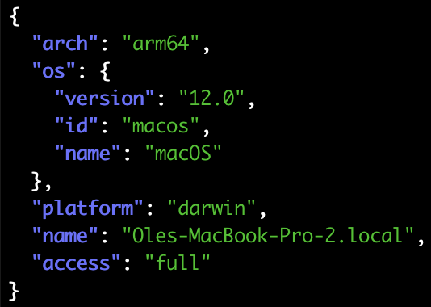
And if I attach a jailed iOS device, I can also query it:
$ python3 -c 'import frida; import json; \
device = frida.get_usb_device(); \
print(json.dumps(device.query_system_parameters()))' \
| jq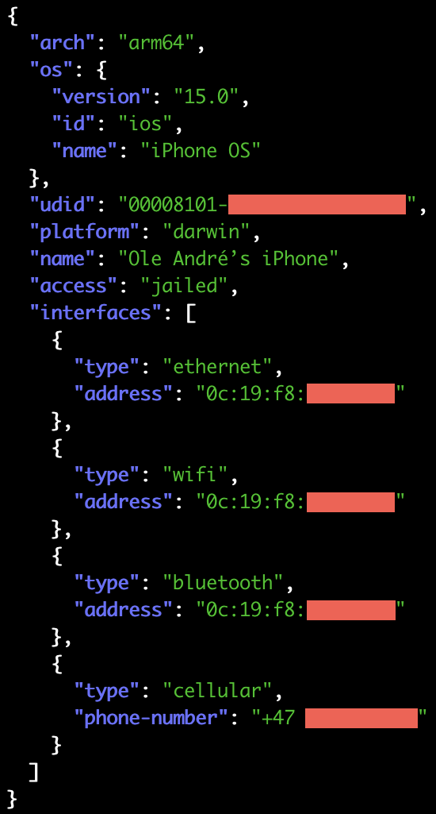
An important detail to note here is access: 'jailed'. This is how you can
determine whether you’re accessing the device through our support for jailed
iOS/Android systems, i.e. limited to debuggable apps, or actually talking to
a remote frida-server – which is what access: 'full' means.
Things are not quite as juicy for Android yet (PRs welcome, btw!), but there are still plenty of useful details:
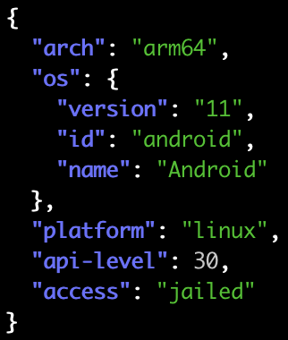
We’re also able to identify the specific Linux distro if it’s LSB-compliant:
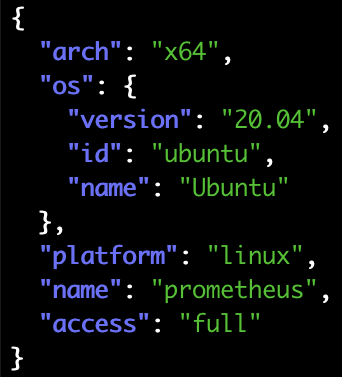
And last but not least, Windows:
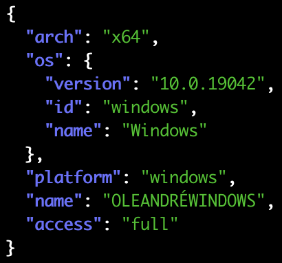
Application and Process Parameters
Another cool idea that started taking shape after some impromptu chats, was when @pancake told me it would be useful to know the particular version of an installed iOS app.
As I had just broken the protocol in so many ways working on the Portals feature, it also seemed like a great time to break it some more, and avoid another painful major bump down the road.
Fast forward a bit, and here’s how it turned out: Our Application and
Process objects no longer have any small_icon or large_icon properties,
but they now have a parameters dict.
By default, with enumerate_applications(), things look familiar:
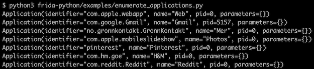
But by changing that to enumerate_applications(scope='metadata'), things get a
lot more interesting:
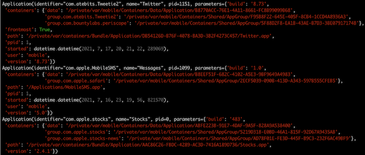
Here we can see the iOS Twitter app’s version and build number, where its app bundle is on the filesystem, the containers that it owns, that it is currently the frontmost app, how long ago it was started, etc.
We can also crank that up to enumerate_applications(scope='full') and get
icons as well:
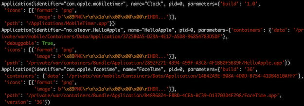
The debuggable: true parameter is very useful if query_system_parameters()
reported access: 'jailed', as that means your application may want to filter
the list of apps to only show the ones it is able to spawn() and/or attach() to,
or perhaps show debuggable apps more prominently to provide a better UX.
It’s probably also worth mentioning that get_frontmost_application() now
supports passing a scope as well.
Those of you familiar with the old API may have noticed that icons may now be delivered in compressed form, as PNGs. Previously this was always uncompressed RGBA data, and the iOS side would do the PNG decoding and downscaling to two fixed resolutions (16x16 and 32x32).
All of this meant that we would waste a lot of CPU time, memory and bandwidth to include icons, even if all of that data would end up in a CLI tool that doesn’t make use of it. So now with Frida 15 you might notice that application and process listing is a lot faster. And even if you do request icons, it should also be faster than before as we don’t do any decompression and downscaling.
That was application listing. All of the above is also true for process listing,
and this is what enumerate_applications(scope='full') might look like now:
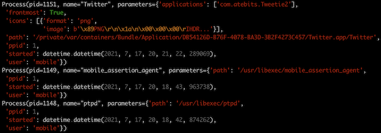
Here it is also clear that the Twitter app is currently frontmost, that its parent PID is launchd (PID 1), the user it is running as, when it was started, etc.
You might be wondering why applications is an array though, and the answer is
probably best illustrated by an example from Android:
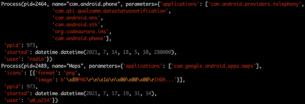
The “com.android.phone” process actually hosts six different “applications”!
And once again, last but not least, I didn’t forget about Windows:
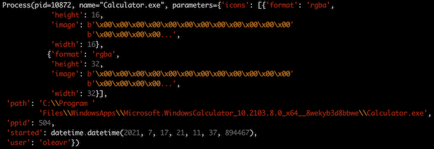
So that’s the “scope” option. There’s also another one, meant for UIs. The idea is that a UI might want to grab the list of applications/processes quickly, and may not actually need metadata/icons until the user interacts with a particular entry, or scrolls a subset of entries into view. So we now provide an option to support such use-cases.
Say we only want to grab the metadata for two specific apps, we can now do:
ids = [
"com.atebits.Tweetie2",
"no.sparebank1.mobilbank"
]
apps = device.enumerate_applications(identifiers=ids,
scope='full')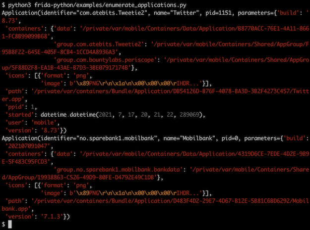
We also support the same feature for process listing, where it looks like this:
processes = device.enumerate_processes(pids=[1337, 1338],
scope='full')Portals and Application/Process Parameters
Now that we have covered application parameters and portals, there’s an important detail that’s worth mentioning: Given that it doesn’t make much sense to implement query_system_parameters() in the case of a PortalService, as it’s surfacing processes from any number of (potentially remote) systems, we can use application/process parameters to fill this void.
This means that any Application and Process coming from a PortalService will,
if scope is set to metadata or full, provide one parameter named system,
which contains the system parameters for that particular application/process.
This way an application can still know ahead of time if it’s interested in a
particular process.
Jailed iOS and Android Improvements
I had a lot of fun implementing the Application and Process parameters feature, and tried to see how narrow I could make the gap between jailed (non-rooted) and jailbroken (rooted). For example on Android, we didn’t even fetch app labels in the non-rooted code-path. This was because we were relying on running shell commands over ADB, and I couldn’t find a way to grab labels in that case.
The shell command route is very fragile, as most tools output details in a format that’s meant to be consumed by a human, not a machine. And obviously such output is likely to change as Android evolves.
Because of this we now have a tiny prebuilt .dex that we copy over and run, and grabbing metadata is only a matter of making RPC calls to that helper process. This means we are able to provide all the same details for non-rooted as we provide in the rooted case, where we have a frida-server running on the Android side.
Another thing worth mentioning is that we no longer consider Android’s launcher a frontmost app, which means this is now consistent with our behavior on iOS, where SpringBoard is never considered the frontmost app.
As part of these major changes I also added code to fetch icons on Android as well, both non-rooted and rooted, so that this feature is no longer just limited to iOS, macOS, and Windows.
We didn’t provide icons for jailed iOS though, but that feature gap is now also
closed. There is however still one difference between jailed and jailbroken iOS:
the ppid and user parameters are not available in the jailed case, as this
is not exposed by any lockdown/DTX API that I’m currently aware of. But other
than that, things are in pretty good shape.
Massively improved backtraces on i/macOS
Thanks to a very exciting pull-request by @hot3eed, we now have an i/macOS
symbolication fallback that uses the Objective-C runtime. In this way, instead
of showing module!0x1234, we may be able to resolve that to an Objective-C
method. Yay!
We also got another awesome contribution by @mrmacete, where NativeCallback
now always exposes a context, so you can do Thread.backtrace(this.context) and
expect it to work in all cases.
This was previously only possible when NativeCallback was used as an Interceptor replacement. So if you were using ObjC.implement() to swizzle an Objective-C API, you couldn’t actually capture a backtrace from that NativeCallback. So this is a super-exciting improvement!
Unextracted Native Libraries on Android
For those of you using Frida on Android, you may have encountered apps where native libraries don’t reside on the filesystem, but are loaded directly from the app’s .apk. Thanks to a great contribution by @P-Sc, we now support this transparently – no changes needed in your existing instrumentation code.
Upgraded OS Support
We now also support the latest betas of macOS Monterey, iOS 15, and Android 12. Special thanks to @alexhude at Corellium for helping debug and test things on iOS 15, and @pengzhangdev who contributed a fix for frida-java-bridge to support Android 12.
Networked iOS Devices
Another feature that’s been requested a few times is support for networked iOS
devices. This is great if you don’t want to destroy your iPhone/iPad’s battery
by leaving it plugged in all day. What’s great about this feature is that it
“just works” – you should see them if you run frida-ls-devices.
Only two pitfalls worth mentioning: You may now have two different Device objects with the same ID, in case a networked iOS device is reachable through the network while also being plugged in.
E.g.:
$ frida-ls-devices
Id Type Name
------------------------- ------ -------------------------------------
local local Local System
00008027-xxxxxxxxxxxxxxxx usb iPad
socket remote Local Socket
00008027-xxxxxxxxxxxxxxxx remote iOS Device [fe80::146f:75af:d79:630c]So if you’re using -U or frida.get_usb_device() things will work just like
before, where you’ll be using your device through USB. But if you want to use
the networked device, then resolving it by ID means the USB entry will take
precedence, as it’s typically ahead of the networked device in the list of
devices.
This means you would also need to check its type. Our CLI tools don’t
yet provide a switch to do this, but this would be a welcome pull-request if
anyone’s interested!
The second pitfall is that frida-server only listens on the loopback interface
by default, meaning we won’t be able to connect to it over the network. So if
you’re using our iOS .deb either manually or through Cydia, you will have to
edit /Library/LaunchDaemons/re.frida.server.plist to add the --listen
switch, and then use launchctl to restart it.
This may also be a situation where you want to make use of the new TLS and authentication features mentioned earlier, depending on how much you trust your network environment.
EOF
There’s also a bunch of other exciting changes, so definitely check out the changelog below.
Enjoy!
Changes in 15.0.0
- Introduce PortalService API and daemon, a network service that orchestrates a cluster of remote processes instrumented by Frida. Implements both a frida-server compatible control interface, as well as a cluster interface that agents and gadgets in target processes can talk to. Connected controllers can enumerate processes as if they were local to the system where the portal is running, and are able to attach() and also enable spawn-gating to apply early instrumentation.
- Add Session.join_portal(), making it easy to share control of a process with a remote PortalService, joining its cluster together with other nodes.
- Add “connect” interaction to frida-gadget, so it can join a PortalService cluster as well.
- Add PortalClient, used to implement Session.join_portal() and frida-gadget’s “connect” interaction. Connects to the PortalService and joins its cluster. Implements automatic reconnect in case of transient failures. Also supports specifying an ACL, which is a list of tags that the PortalService must require connected controllers to possess at least one of. It’s up to the application to implement tagging of controllers based on e.g. authentication.
- Add Device.bus API to allow clients connected to a PortalService to exchange application-specific messages with it. Requires instantiating the service using the API in order to wire up message handlers and protocol logic.
- Add Session persistence support, enabled by specifying a non-zero “persist_timeout” option when attach()ing to a process. When the server subsequently detects that the client owning the session got disconnected, it will allow scripts to stay loaded until the timeout (in seconds) is reached. Any script and debugger messages emitted in the meantime are queued, and may later be delivered if the client returns before the timeout is reached.
- Add TLS support, enabled by specifying a certificate. On the server end this is a PEM with a public and private key, where the server will accept any certificate from the client’s side. However for the client this is a PEM with the public key of a trusted CA, which the server’s certificate must match or be derived from.
- Add authentication support, enabled by specifying a token. The daemons allow specifying a static token through a CLI option, and the APIs allow plugging in a custom authentication backend – which means the token can be interpreted as desired.
- Move network protocols to WebSocket.
- Add protocol-level keepalives.
- Implement WebRTC Data Channel compatible peer-to-peer support, enabled by calling setup_peer_connection() on Session. This allows a direct connection to be established between the client and the remote process, which is useful when talking to it through e.g. a Portal.
- Optimize protocol by skipping the DBus authentication handshake and telling GDBus not to fetch properties, saving an additional roundtrip.
- Drop deprecated protocol bits, such as Session.enable_jit().
- Add Device.query_system_parameters(). Thanks @Hexploitable!
- Improve the application and process query APIs. (Covered extensively above.)
- Switch Crash parameter names to kebab-case.
- Add Session.is_detached(), useful in multi-threaded scenarios where the “detached” signal may already have been emitted by the time we manage to connect to it.
- Fix Stalker handling of SYSCALL instructions on Linux/x86.
- Fix the iPad device name on macOS.
- Massively improve backtraces/symbolication on i/macOS in cases where symbols are missing, but the address to be symbolicated belongs to an Objective-C method. Thanks @hot3eed!
- Improve backtracer accuracy and flexibility, now exposing a minimal context to NativeCallback in cases where it’s not used as an Interceptor replacement. One such example is ObjC.implement(), used for swizzling APIs. Thanks @mrmacete!
- Improve Interceptor reliability on macOS/arm64, by switching to the mapping strategy that we use on iOS.
- Add support for network-connected iOS devices.
- Avoid leaving behind a file when sandbox check fails on iOS.
- Fix Stalker on newer iOS hardware jailbroken with checkra1n. This was solved by disabling RWX support on iOS for now: Even if the jailbreak appears to make it available, whether it actually works boils down to which mitigations the hardware supports. Shout-out to @stacksmashing for reporting and helping get to the bottom of this one!
- Remove bashisms from iOS maintainer scripts, for improved jailbreak compatibility. Thanks @nyuszika7h!
- Improve Interceptor frame layout on arm64, so backtracing code is able to walk the stack past our generated code. This also makes it easier to use a debugger together with Interceptor.
- Fix ObjC ApiResolver deadlock, which occurred when free() was resolved lazily from a dyld image callback, at which point it is a bad idea to call dlsym().
- Add support for unextracted native libraries on Android. Thanks @P-Sc!
- Fix Android get_frontmost_application() name truncation.
- Don’t consider the Android launcher a frontmost app.
- Use the Android app’s label as the process name if the process represents is its main UI process. This is finally consistent with what we do on iOS.
- Improve jailed Android injector: Now using a long-lived shell session to speed things up. Also ensure filenames dropped into /data/local/tmp are unique, and clean up temporary files.
- Drop Firefox OS support.
- Rename the weak ref API to avoid clashing with ES2021. So instead of WeakRef.bind() and WeakRef.unbind(), these are now Script.bindWeak() and Script.unbindWeak().
- Massively improve memory allocation performance on Windows, by lowering the dlmalloc spin-lock sleep duration to zero – which means it will only yield the remainder of its time slice. The default of 50 ms is prone to introduce significant delay as soon as threads start competing for the lock.
- Lazily create the ScriptScheduler thread pool. This means anyone using GumJS can avoid background threads until they’re really needed. Very useful if you’re writing a tool or agent that needs to handle fork(), without having to implement logic to stop and later restart threads. (Something frida-agent does, but which isn’t necessarily needed for simple use-cases.)
- Java: Add support for Android 12 beta. Thanks @pengzhangdev!
- Java: Fix Java.array() for unloaded array types: If the type of the array was not used in the application it means that it wasn’t loaded into memory, and Java.array() previously failed because of this. Thanks @yotamN!
- Java: Add toString() to primitive arrays, so that instead of the generic “[Object Object]” string it will generate a string where the array values are separated by commas. Thanks @yotamN!
- CModule: Add missing TinyCC builtins for 32-bit x86.
- python: Add Script.is_destroyed property.
- python: Add Session.is_detached property.
- python: Add Device.is_lost property.
- python: Throw when attempting an RPC call on a destroyed script.
- node: Fix compatibility with newer versions of Node.js, where any given Buffer’s backing store needs to be unique. We solve this by simply making a copy in cases where we cannot guarantee that the same buffer can only be observed once.
- node: Fix use-after-free in signal transform callbacks.
- node: Fix use-after-free in signal connection callbacks.
- node: Move to C++17, for compatibility with newer Node.js headers.
- node: Add Script.isDestroyed property.
- node: Add Device.isLost property.
Changes in 15.0.1
- Ensure DarwinGrafter’s merging of binds doesn’t make gaps in __LINKEDIT.
Not doing so triggers a bug in
codesignfor which the resulting signed binary turns out corrupted. Thanks @mrmacete! - node: Fix compilation error when building with MSVC.
Changes in 15.0.2
- Fix handling of large messages, for both client-server and p2p. Also bump the WebSocket payload size limit to 256 KiB - same as is typically negotiated for data channels in p2p mode.
- Move WebSocket I/O to the DBus thread, to avoid unnecessary thread hopping.
- Plug leaks when using p2p.
Changes in 15.0.3
- Implement a new frida-pipe strategy for i/macOS. Turns out that our previous strategy of directly setting up a Mach port in the target process becomes problematic with guarded Mach ports. So instead we register a Mach service that’s globally visible, and have the target process contact it to fetch its end of the socketpair. We also check with the sandbox up front, and issue an extension token if needed. However, if we’re unable to register the Mach service with launchd, we fall back to our previous strategy.
- Skip iOS platformized detection on iOS >= 15. It interacts badly with guarded Mach ports.
- Port early instrumentation to macOS 12 and iOS 15.
- Gracefully handle agent failing to start. Instead of crashing the target process, simply log the error and unload.
- Linux: Use an abstract name for frida-pipe when supported.
- Unlink UNIX socket when frida-pipe is done with it.
- Fix iOS policyd Mach message lifetime logic.
Changes in 15.0.4
- Fix the i/macOS injector’s data size logic. It’s been hard-coded since the beginning, and the recent entrypoint data size adjustment broke it on systems with 4K pages.
- Fix i/macOS early instrumentation regression on dyld < 4.
Changes in 15.0.5
- Fix the __CFInitialize() code-path on dyld >= 4.
- Fix i/macOS sandbox extension logic during spawn().
- Port jailed iOS injector to iOS 15.
- Implement Android USAP interop.
- Improve DarwinGrafter lazy binds merge logic. Thanks @mrmacete!
Changes in 15.0.6
- Fix Windows build regression.
Changes in 15.0.7
- Fix early instrumentation on Android 12.
- node: Fix the ApplicationParameters typings. Thanks for reporting, @pancake!
Changes in 15.0.8
- iOS: Add support for unc0ver v6.1.2.
- iOS: Update Substrate interop logic to support 0.9.7113.
Changes in 15.0.9
- iOS: Revive support for older OS versions. (Verified on iOS 10.3.)
- iOS: Fix support for older Apple usbmuxd versions.
- Android: Handle devices where jailed is unsupported.
- Fix DarwinGrafter alignment issue, aligning to 16 bytes also when lazy binds follow regular binds. Thanks @mrmacete!
Changes in 15.0.10
- Fix regression where Device.open_channel(“lockdown:”) ended up closing the stream right away.
- Fix crash when talking to older versions of ADB.
Changes in 15.0.11
- Rewrite macOS spawn gating to use DTrace. This means we’ve now dropped support for our kernel extension, and we don’t need to worry about future OSes no longer supporting extensions. It also means we finally support spawn gating on Apple Silicon as well.
- Work around i/macOS arm64 single-step delay during early instrumentation.
Changes in 15.0.12
- Fix macOS spawn gating task port lifetime issue. Should not try to be clever and keep task ports around – bad things happen if a task port is used after an exec transition.
- Remove the i/macOS task port caching logic. It is dangerous in exec transitions, adds some complexity, and doesn’t help all that much performance-wise, anyway.
- Make the macOS spawn gating DTrace predicate environment variable optional.
- Improve the macOS spawn gating error message.
Changes in 15.0.13
- Improve clients to specify Host header and use TLS SNI.
- Revert i/macOS single-step delay workarounds.
- iOS: Fix usbmux port number encoding in the connect request.
- Python, Node.js: Fix ownership in Device.spawn() aux options logic.
Changes in 15.0.14
- Port iOS crash reporter integration to iOS 14.7.1.
- Configure internal agents to be less intrusive on i/macOS.
- Improve i/macOS error-handling during process preparation.
- Revive i/macOS single-step delay workarounds, which turned out to be needed after all.
- Handle reentrancy when about to yield JS lock, which may happen if a replaced function gets called by Interceptor during end_transaction().
- Fix conditional Interceptor unignore logic in GumJS. This was preventing Interceptor from ignoring internal calls, and resulted in noise and reduced performance.
- Enhance the i/macOS DebugSymbol fallback name to also include the unslid address. This makes it easy to plop it into a static analysis tool.
- Fix Stalker code slab refill logic.
- Add Stalker stats interface.
Changes in 15.0.15
- Rework i/macOS Exceptor to support latest iOS 14. This would previously result in a deadlock whenever a native exception occurred.
Changes in 15.0.16
- Fix i/macOS single-step handling on ARM during early instrumentation, which would result in attach() failing randomly for a freshly spawn()ed process. Thanks @mrmacete!
- Add Stalker backpatch prefetching support.
- Make Stalker inline cache size configurable on x86.
- Optimize Stalker x86 return handling.
- ObjC: Allow proxies to implement methods. Thanks @hot3eed!
Changes in 15.0.17
- gadget: Support packaging as framework on i/macOS. Load config from “Resources/config.json”, and resolve relative paths relative to the same directory. As an added bonus, we now also support specifying relative paths for “certificate” and “asset_root”.
- web-service: Implement basic directory listing with NGINX-style output. This is useful with e.g. “frida-server –asset-root=/”.
- stalker: Fix backpatch args for 32-bit x86.
Changes in 15.0.18
- Plug long-standing memory leaks, both in our internal heap’s realloc behavior being misconfigured and causing leaks, and in how we register JavaScript classes with QuickJS. Kudos to @mrmacete for discovering and helping track down these long-standing bugs!
Changes in 15.0.19
- gadget: Fix framework resource lookup logic on iOS.